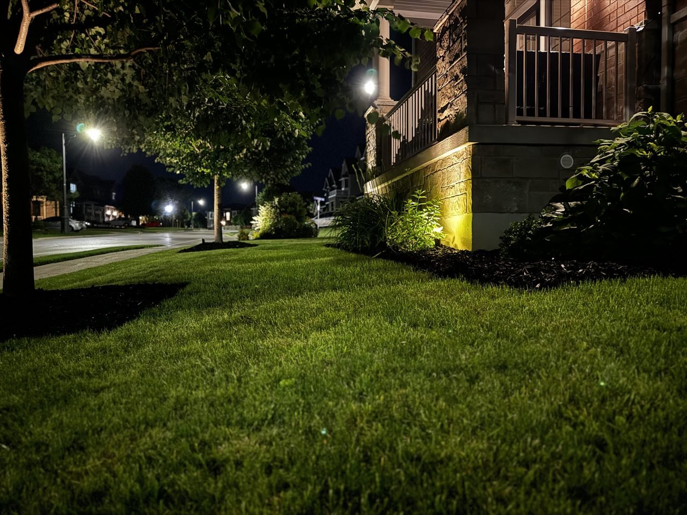
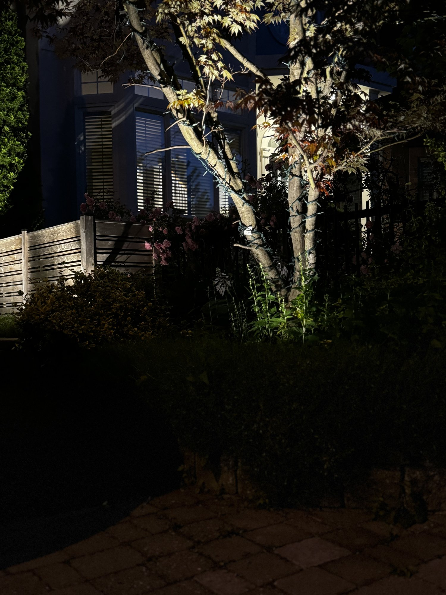
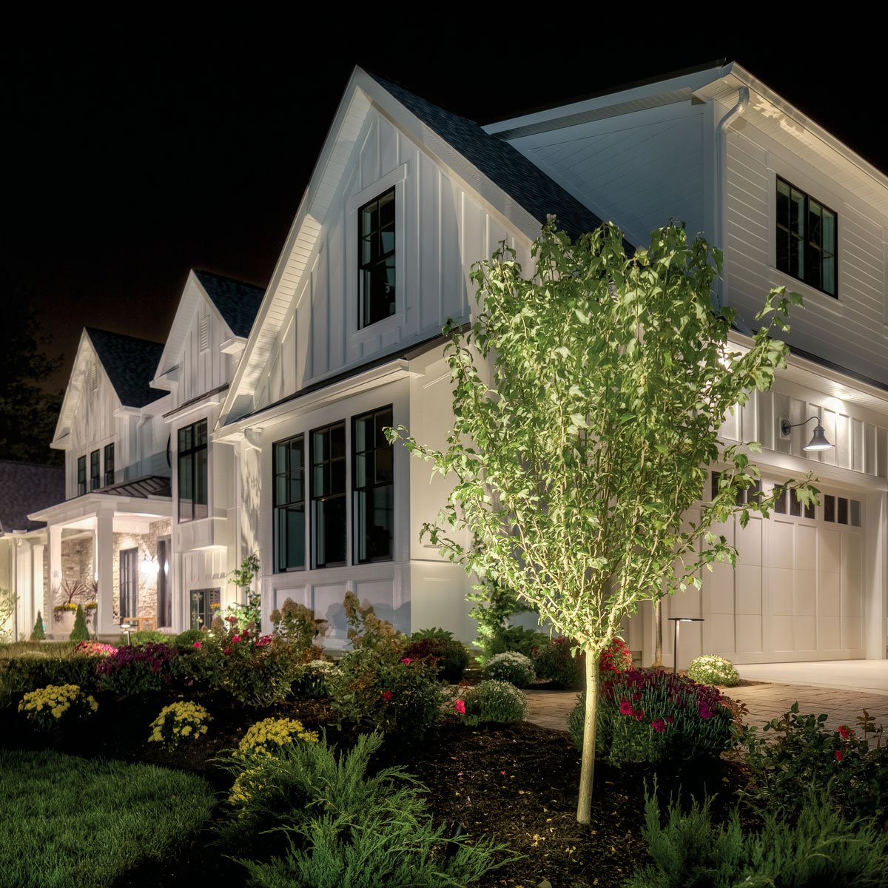
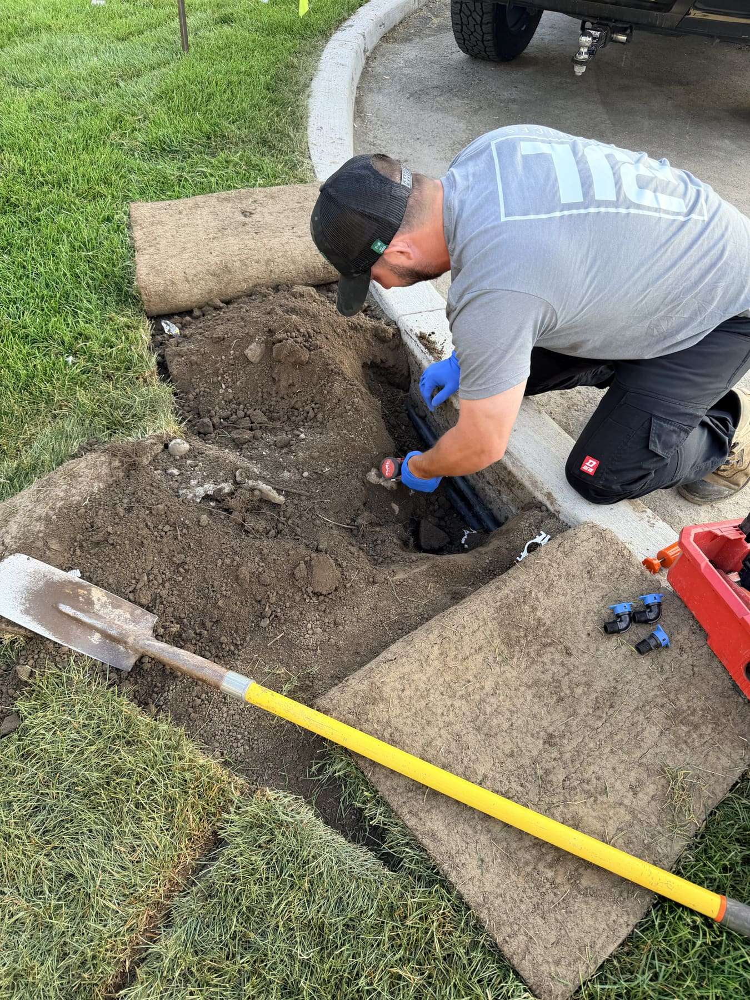

Your house looks great in daylight. The question is what it does after dark — and for most homes the honest answer is "disappears." Good landscape lighting fixes that: it makes the architecture read at night, makes the property safer to move around, and does it on a fraction of the power these systems used to draw. Here's how the pieces fit and what a real install involves.
Most great residential lighting designs combine four techniques — path lighting, uplighting, downlighting (moonlighting), and step/hardscape lighting — in low-voltage LED. A professional GTA install typically runs from a starter package to estate scale; see our lighting page for current package ranges. If you already have irrigation, the smartest move is to run both in one trench.

What good lighting actually does for a property
Beyond the obvious curb appeal, professional lighting buys you three practical things — safety, security, and usable outdoor hours — on a fraction of the power these systems used to draw. In Newmarket and across the GTA the sun sets around 4:30 in the depth of winter, so "after dark" is half your year.
- Curb appeal past sunset. A lit property still reads as "the nice house" from the street at dusk — and in a market that increasingly shows homes in the dark half the year, that first impression carries.
- Real security, not just the look of it. Uplighting on the façade, lit walkways, and shielded downlights erase the dark corners that make a home look empty and give it a lived-in, watched-over feel.
- Usable space after dark. Patios, walkways, deck stairs and BBQ zones stay functional well past 6 p.m. in November, when otherwise nobody sets foot outside.
- Value that shows. Real-estate agents we work with consistently call out professional landscape lighting as a genuine curb-appeal lift on a typical York Region home.
The four techniques that do the heavy lifting
Almost every strong design is a mix of four moves. You rarely want just one — layering them is what makes a property look composed at night instead of spot-lit.
Path lighting
Low fixtures that wash light downward along walkways and bed edges. Shows people where to walk, defines the property lines, and adds rhythm.
Uplighting
Ground fixtures aimed up at trees, columns or a stone façade. The single biggest dramatic-impact-per-dollar technique.
Downlighting / moonlighting
Fixtures mounted high in trees or under eaves, washing soft light down to mimic moonlight. Creates layered, natural light over patios and lawns.
Step & hardscape lighting
Recessed fixtures in stair risers, deck posts and retaining walls. Both practical (preventing falls) and beautiful (defining the architecture). More on stairs below.

Why LED changed outdoor lighting
LED replaced halogen for good reason: it draws a fraction of the power, runs for years instead of seasons, and now comes in warm colour temperatures that look like lamplight, not a parking lot. That efficiency is also what makes bigger, layered designs affordable to run.
A decade ago outdoor lighting meant halogen — hot, power-hungry, and burning bulbs out every season or two. Today's fixtures last for years on a small fraction of the draw, and the warm colour temperatures we spec read like lamplight rather than a big-box floodlight. That's the shift that makes layering four techniques across a whole property realistic to run night after night without watching the hydro bill.
The catch — and this is where corner-cutting installers fail — is that cheap LED fixtures from the box store aren't engineered for Canadian winters. The fixtures we install carry marine-grade ratings, sealed connections and a multi-year warranty. Buy quality once and you're not back out there replacing fixtures after the first freeze cycle.
"We get called in every spring to replace homeowner-installed big-box-store landscape lights that didn't survive the winter. Cheap fixtures, exposed connections, the works. The 'savings' from going DIY usually evaporate after one freeze cycle. Buy quality once."

What does landscape lighting cost?
Cost scales with fixture count, transformer size and design complexity — a starter package of a handful of fixtures sits at one end, a full estate-scale perimeter design at the other. PJL publishes package ranges on the lighting service page, and every package includes a 3-year warranty on fixtures and labour.
Rather than quote a number that won't fit your property, we come out at dusk, walk it with you, identify the four to six spots that produce the biggest visual impact, and quote on the spot. See current package ranges on our landscape lighting page.
See it before you buy it.
We come out at dusk, walk the property with you, and point out the four to six spots that produce the biggest visual impact — then quote on the spot. No commitment, and you see exactly what you're paying for.
See the lighting service & package rangesShould you install lighting and irrigation at the same time?
If you're already putting in — or already have — a sprinkler system, yes. Lighting and irrigation share the same trenching and wire pathways, so doing them together with one crew saves the cost and disruption of opening the ground twice. On a Hydrawise system, lighting can even run on a parallel program.
This is the part most lighting companies can't offer and most irrigation companies don't think about. Because PJL does both, the wiring for your lights can go in the same trench as an irrigation run — one mobilization, one restoration, one crew. If you've got a Hunter Hydrawise controller, we can tie lighting into it so it comes on with the same app you already use.

What's the best way to light outdoor steps and stairs?
Light steps from within the structure — recessed riser lights, or fixtures under a railing or cap — aimed low so the tread is lit without a glare in anyone's eyes. The goal is to make the edge of each step legible, not to floodlight the staircase.
Stair lighting is where safety and design meet: get it right and the stairs read clearly at night with no harsh glare; get it wrong and you've built a row of tiny spotlights pointed at your guests. Recessed step lights and shielded down-lights on the structure are the reliable answer, spaced so every tread edge catches light.
Want to see what your property could look like after dark?
Book a dusk walk-through — we'll show you the four to six highest-impact spots and quote on the spot, no commitment. Or call (905) 960-0181.